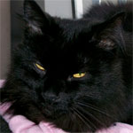

The "Midnight" in MidnightBSDMidnightBSD is a FreeBSD derived Operating System. A critical goal of the project is to create an easy to use desktop environment with graphical ports management, and system configuration using GNUstep. The vast majority of the operating system will maintain a BSD license. Certain software packages use other licenses such as X.org, GCC, and GNUstep.
MidnightBSD was forked from FreeBSD 6.1 beta. The system was forked to allow us to customize and integrate the environment including the ports and system configuration. We wish for the system to appeal to beginners as well as more experienced BSD users. Many operating systems are under active development; with MidnightBSD, we wish to focus on optimization and usability improvements for desktop users.
The FreeBSD project has developed a reliable server operating environment, but often usability and performance on the desktop is overlooked. Scheduling, allocation of resources, security settings, and available application support should be tailored to desktop users. Many of the BSD projects are tailored to servers or older hardware. Others are distributions of FreeBSD with a nice graphical user interface, but still suffer from server centric design under the hood. We did not fork FreeBSD as a result of a falling out, but rather as an excellent starting point. It should be viewed as a compliment to the FreeBSD developers who have worked very hard on FreeBSD 5.x and 6.x.
We hope to create something unique. Project goals include:
- A new window and login manager. [Replaced by Etoile]
- Centralized system preferences while maintaining the BSD style on the command line.
- A graphical ports and package management system. Currently we use a derivative of FreeBSD ports. [Now we have mports]
- Work on various portions of the kernel including syscons, process and disk scheduling, imports of FreeBSD and OpenBSD drivers, etc.
- Importing useful features from DragonFly, OpenBSD and NetBSD.
- Improving security with little distraction to the end user. [ipfw is enabled in CURRENT, many other changes are coming]
Picking a name for MidnightBSD was challenging. Many domain names related to BSD are in use by different parties. desktopbsd's domain had been purchased but not up yet. My list of 35 names didn't last long when I started checking whois records.
After anything obvious for the desktop was taken, I decided to follow DragonFly's idea of using a living element. Many stupid names came up like SharkBSD, HammerHeadBSD, etc. I decided they sounded stupid. I thought of TigerBSD; it sounded nice and I could think of some good themes for it. However, I was afraid a certain fruit company would get upset with me. Finally, I decided to name MidnightBSD after my first cat, Midnight.
Newer logo designs feature a cat sitting on the moon. This was a compromise as so many people hear the name and think of the time of day. The current logo on the website is a picture of Midnight's eyes. A newer logo design we've been playing with is on cia.vc and the MidnightBSD Developer Blog.
Also, a cat has a similar shape to the BSD daemon, and there is of course the "cat" command.
Midnight is ten years old. He's a black turkish angora with long hair and gold eyes. When he was younger, he used to shutdown Netscape on me while I was surfing to get attention on my old iMac (OS 9). He frequently sits on top of PCs and Macs.
{kind=link}